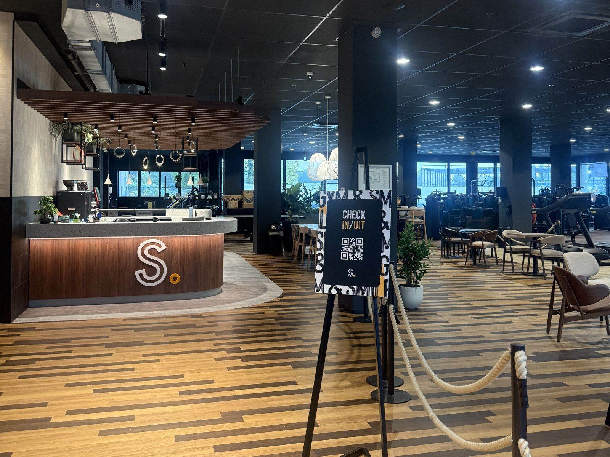

FAQ
Answers to the questions people ask most.

Answers to the questions people ask most.
A common guideline for people who train is about 1.6–2.2 g of protein per kg of body weight. For someone who weighs 70 kg, that’s roughly 110–150 g per day. Spreading it over your meals makes it easier to hit.
There isn’t one best plan. OMAD, intermittent fasting and calorie tracking can all work. The best one is the plan you can stick to long term.
No, but it helps. To lose fat you need to eat a little less than you burn, and tracking makes that easier to see. If counting feels like too much, eating more whole foods and controlling portions can also work.
Yes. If you can fit your favourite food into your calories, you can still eat it. Cutting out everything you enjoy usually leads to giving up. Aim to eat healthy most of the time and leave some room for treats.
Not really. Most of what you need comes from normal food. Protein powder can be handy if you struggle to eat enough protein, but it isn’t required.
Three to four sessions a week is plenty for most beginners. Your body needs rest days to recover and get stronger.
This depends on how sore you are. If you feel a lot of soreness in your muscles, skipping only 1 workout is fine (don’t make it a habit). Training with a little soreness is also okay.
This is good to mention: muscle soreness typically occurs whenever you’re doing a movement for the first time ever in your life. If you have never done a push-up in your life, you will probably have some soreness tomorrow. But this doesn’t mean that just because you are sore, you had a good workout. The opposite is also true: you can have a good workout without getting sore at all. Even if soreness feels productive, it doesn’t mean you actually built muscle, and no soreness doesn’t mean you didn’t do anything at all.
Around 45 to 60 minutes is enough. A focused short workout is better than a long one where you spend half the time on your phone.
If you are consistent with your training and diet, you should start seeing results mentally right away, while physically it might take months. One thing I noticed is that even if it takes months to see results physically, once you start seeing results your motivation goes through the roof.
Warm up before every session and learn proper form before lifting heavy. Increase weight slowly and listen to your body. Rest when you need to.
This is actually an important question. While you don’t need cardio to lose weight, if you skip cardio you will get tired more easily, which will affect your workouts. Not to mention the million benefits of having good cardiovascular endurance.
Start with the three steps on the Where to begin page: assess, set a goal and begin. Keep your first workouts simple with basic exercises like squats, push-ups and rows.
No. You can start at home with bodyweight exercises like push-ups, squats and lunges. A gym gives you more equipment as you progress.
No one is ever too old, too heavy or too unfit to start. Even if you are 70 years old, 200 kg or have never worked out in your life, starting to work out will change your life.
That’s very common. Go at quieter times, like early morning or midday, and bring a plan so you know what to do. Everyone at the gym was a beginner once.
Don’t worry about it. One missed session won’t ruin your progress. Just get back on track with your next workout.
While motivation comes and goes, the only thing that will lead to success is discipline. Even if there are small things you can do to help motivation, if you are not consistent enough you might never succeed.
Sleep, diet and exercise are pretty much the 3 pillars of having your ultimate physique. If you don’t get enough sleep, you will never progress. Minimum required sleep is 7–8 hours.
Active rest days are encouraged. If you have the time, hopping on the treadmill and walking for at least 30 minutes would be really good for your body.
No. This website is for general information only. If you have a health condition or injury, talk to a doctor before starting a new diet or training plan.
Use the Contact page or click the Contact button below. I’ll try to answer as soon as I can.
Send them to me and I will answer.